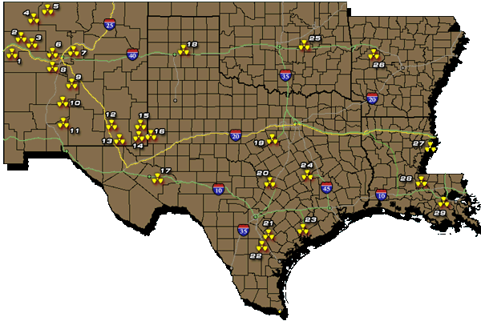

Texas Radiation Online - Regional MapRegional Map
Yellow lines are for transportation routes to Yucca Mountain, Nevada.
Green lines are for transportation routes to Waste Isolation Pilot Plant (#12) in Carlsbad, NM.

1. Church Rock Uranium Mine
2. Ambrosia Lake Uranium Mine
3. Crownpoint Uranium Mine
4. Shiprock Uranium Mine
5. Gas Buggy Underground Detonation (Op. Plowshares, 12-10-1967)
6. Sandia National Labs
7. Los Alamos National Labs
8. Laguna Pueblo Uranium Mine
9. New Mexico Tech (Depleted Uranium Missile Testing)
10. Trinity Nuclear Weapons Detonation (07-16-1945)
11. White Sands Missle Range
12. Waste Isolation Pilot Project (WIPP)
13. Gnome-Coach Underground Detonation Site (Op. Plowshares, 12-10-1961)
14. L.E.S./URENCO National Uranium Enrichment Facility (proposed- in progress)
15. Uranium Deconversion Plant (proposed- to treat L.E.S. waste for disposal at WCS)
16. WCS's Low-Level Waste Processing and Disposal Site (now proposed U.S. Nat'l Dump)
17. UT System Storage Site, Fort Stockton
18. Pantex Nuclear Weapons Facility
19. Comanche Peak Nuclear Power Plant
20. UT Austin, one TRIGA-II Research Reactor
21. South Texas Uranium Mining (1954-1987; 23 Companies,18 Counties, almost 100 sites)
22. Conquista & Panna Maria: Mines used as Nuclear Waste Dumps (closed)
23. South Texas Project Nuclear Power Plant
24. UT A&M, two TRIGA-II Research Reactors
25. Kerr-McGee Sequoya Fuels Corp- Cimarron Plutonium Production Plant, Gore, Oklahoma
26. Arkansas Nuclear One, Nuclear Power Plant
27. Grand Gulf Nuclear Power Plant, Mississippi
28. River Bend Nuclear Power Plant, Louisiana
29. Waterford Nuclear Power Plant, Louisiana